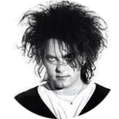
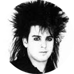
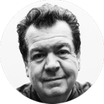

Robert Smith

Robert James Smith (Blackpool, Inglaterra; 21 de abril de 1959), más conocido como Robert Smith, es guitarrista, vocalista, compositor, co-fundador y líder de la banda inglesa de rock alternativo The Cure.En su trayectoria musical, Smith ha tocado guitarras de 6 y 12 cuerdas, bajos de 4 y 6 cuerdas y teclados, entre otros instrumentos. Robert Smith es, además, productor musical y multi-instrumentista: toca la guitarra, el bajo, el cello, la armónica y los teclados. Es conocido por su aspecto característico en el escenario con el pelo cardado, los labios pintados borroneados de rojo, el maquillaje oscuro en sus ojos y por su peculiar timbre de voz. Esta es la imagen que lo ha convertido en un referente de la cultura de masas. Ganó dos premios Brit por Disintegration y estuvo dos veces nominado al Grammy con su grupo The Cure por los álbumes Wish8 y Bloodflowers9 respectivamente. En 2005 obtuvo el Premio Ivor Novello1011 y en 2009 recibió el Goodlike Genius por toda su carrera musical.12 El 29 de marzo de 2019, The Cure ingresó en el Salón de la Fama del Rock and Roll siendo Smith el representante de recoger dicho galardón por su trayectoria musical con su formación
simon gallup
Simon Jonathan Gallup (Duxhurst, Surrey, 1 de junio de 1960) es un bajista inglés, integrante de la banda de rock, The Cure.
En 1982, Simon fue expulsado del grupo por problemas tras una supuesta pelea en un bar con el vocalista y guitarrista Robert Smith, poco tiempo después de haber grabado el álbum Pornography, en el cual también ejecutó los teclados y finalizó la gira de promoción de dicho álbum. Posteriormente, se reintegró como bajista a la banda en 1985, en la que ha permanecido hasta la actualidad. Durante su separación de The Cure (1982-1984), formó la banda Fools dance. Anteriormente, entre 1976-1979 fue bajista de la banda Lockjaw, y en 1979 de la banda The magazine spies. Sin duda alguna, Simon Gallup, junto a Robert Smith y Lol Tolhurst, ha sido un miembro clave de The Cure a lo largo de su historia. Su regreso a la banda, después que Robert reconociera sus propios errores, mostró que su aporte al sonido de The Cure era fundamental.El sonido de Gallup al bajo probablemente encontró uno de sus mejores momentos en el año 1986, año en el que se grabó el concierto The Cure in orange en las versiones en vivo de Push, A Night Like This, Kyoto Song y Shake Dog Shake.

lol tolhurst

Laurence "Lol" Tolhurst (nombre real Laurence Andrew Tolhurst), nació el 3 de febrero de 1959 en Horley, Surrey, Reino Unido. Es miembro fundador de la banda de rock alternativo The Cure e integrante hasta 1989 como baterista y teclista. En el momento de la fundación de la banda, Lol Tolhurst era el baterista. Como tal grabó todos los discos de la primera época del grupo, Three Imaginary Boys, Boys Don't Cry, Seventeen Seconds, Faith y Pornography. Dejó su impronta innovativa en canciones como "Jumping Someone Else's Train" y "The Hanging Garden" entre otras.Lol Tolhurst asumió el papel de teclista tras el tour de Pornography a finales de 1982.